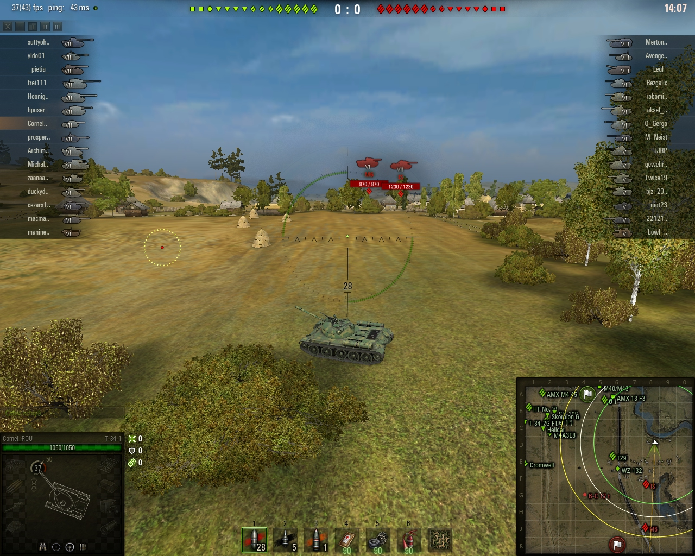
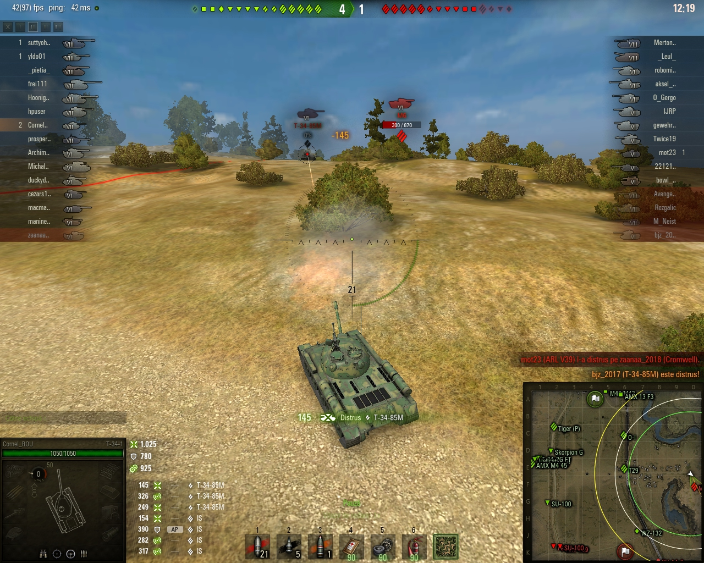
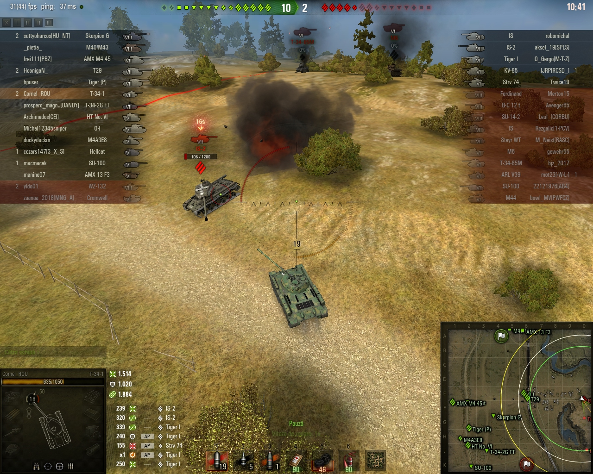

T-34-1 (Mediu, China, VII) – Prea bun…
Bine v-am regăsit, oameni buni! Azi vă propun să ne aventurăm împreună într-o nouă luptă de tancuri. Voi “călări” un mediu chinez de Tier 7, T-34-1, tanc care mie îmi place foarte mult.
De fapt, după ce l-am testat pe Serverul de Teste, am decis că-i musai să mi-l cumpăr, ceea ce am şi făcut. M-a costat 49.000 experienţă şi 1,4 milioane credite, apoi l-am upgradat full…
Ce să vă spun despre tănculeţul ăsta? Are o turelă rotundă foarte bine blindată pentru un mediu, 170 mm în faţă, 120 mm pe lateral şi 60 spate. Pe corp e mai “light”, cu 60 mm faţă, 45 lateral şi 40 spate, dar asta-l ajută să se mişte foarte bine pe câmpul de luptă pentru că nu trece de 33 de tone în greutate.

Tunul e un punct forte! T-34-1 vine cu un tun de 100 mm, cu penetrare de 175 mm (cu AP) şi 235 mm (cu speciala)! Damage: 250/lovitură. După ce am pus încărcător rapid pe el, încarcă la opt secunde. Per total, tunul e arhisuficient pentru acest tanc ca să se poată lupta cu orice vehicul de tier 7-8! Dezavantajul e că are o declinaţie mică (-5 grade) aşa că nu prea îl putem folosi pe dealuri/dâmburi…

Camuflajul e un alt avantaj al micului chinez! Are un profil mic, e mai greu de ţintit, iar cu camuflaj şi plasă e şi mai greu de detectat dacă mai stă şi prin tufişuri! Motorul de 520 cp îi permite o viteză de 50 km/h.

Cam atât despre prezentare. Haideţi să intrăm într-o luptă cu el să vedem ce poate!

Hartă Prohorovka, bătălie de tier 6-8. Eu, undeva pe la mijlocul listei, nici de bine, nici de rău.

Aici sunt, prezent! Aşadar, ce facem, unde mergem? Eterna întrebare…
Mă decid să merg pe stânga, pe dealul de acolo unde de obicei cică se decide bătălia! Mă pornesc…

După cum vedeţi pe miniharta de jos, sunt singurul care a luat-o pe arătură în direcţia asta! Deci, soarta mea pare pecetluită! Să vă spun sincer, mi-e lene să mă întorc! O să merg acolo chiar dacă-s singur şi asta e, voi muri ca un erou de poveste. Da’ până atunci mai este!

Am ajuns la destinaţie… Zici că-s la munte, în vacanţă! De regulă, aici ne ciocneam între noi care să prindă un loc mai bun! Acum mă ciocnesc doar de umbra mea… şi de IS-ul ăla din zare! Dar înainte să continuăm uitaţi-vă puţin pe miniharta de jos! Toată echipa mea e în dreapta, două Heavy-uri pe mijloc (O-I în spate, T29 în faţă) şi eu singur pe deal. Frumos, nu?
Mă duc spre el să-i dau vreo două. Nu stă bine acolo, e prea în tarlaua noastră. Şi nu cred că are viză!
Uite-l, frumosu’ lu’ tata! El expus cu lateralul, eu scot doar turela. Da, turela aia super-mishto cu “interzis” la penetrare!
Îi dau prima “boabă” de 255 dmg. E bine pentru unu’ care are wn8 abia dublu cât damage-ul ăsta!
Trage el acolo unde spuneam, în turela mea care e Miss Univers între turelele de Medii. Blocat 390 dmg! Trag şi eu…
222 damage îi dau cu a doua lovitură… The Show must go on!
IS-ul e lovit şi de Dumnezeu, adică de artileria noastră… Tunul meu se reîncarcă bătrâneşte, adică încet şi sigur.
Trag, da’ trag într-un muşuroi de furnici de pe dâmbul din faţa mea. Hm, cre’ că-mi trebuie ochelari de vedere pe timp de zi!
Trage el, da’ tot în turela mea şi tot 390 dmg blocat. Ce-mi place! Mai că aş sta aşa tot meciul! Dar mai am şi alţii pe hartă, asa că hai să-l omorâm pe ăsta!
Şut şi gol! Adică, pardon, trag şi IS moare…

Jucătorul cu IS-ul era Rezgalic… 5.000 de lupte, 2.991 scor, adică o tomată ca mine, doar ca el e deja bulion!
N-apuc să gust prea mult momentu’ că-mi şi apare un T-34-85M pe vârfu’ dealului! Eu cu spatele la el…
Nu-i frumos să stai cu spatele la ăştia pe care vrei să-i omori, aşa că m-am întors cu faţa…
Omu’ trage o rachetă, eu dau în spate tocmai la timp ca să dau apoi în faţă, iar proiectilul lui se duce în alt continent.
Trag şi eu. Prima lovitură nu-i penetrează turela, a doua e 249 dmg.
Mai apare un “roşu”, M6! Eu însă rămân conectat la T-34, îl plesnesc de-i moare turela! A doua victimă şi am sărit de o mie damage dat!

Jucătorul distrus e bjz_2017, 13 mii de lupte, 2.355 scor. Bulion…
M6-le mă loveşte şi el, dar ăsta ştie să ochească, nu mi-a dat în turelă! Nu-i stres, e de unde scădea! Am pornit cu 1.050 hp deci pot primi liniştit câteva. Aici nu-i ca-n viaţa reală! În realitate nu poţi să-i spui unuia “bagă, frate, cuţitu’-n mine de vreo trei ori că sigur nu mor”! Aici merge…
M6 e distrus de colegu cu T29, dar îmi apare un Tiger!
Apoi văd că am şi un IS-2 în zonă! Deci, după ce am dat de primul IS, de T-34-85M, de M6 şi de Tiger fix ăsta mai lipsea! Nu-i bai, e bine şi aşa rău!
Fac ceva assist cum mă plimb eu aşa, ca la munte, în vacanţă…
Mă pun eu într-un tufiş şi stau cuminte, în aşteptare… Nu durează mult până când mi-apare sinucigaşul voluntar!
239 îi dau la IS-2! Dar omu’ e hotărât ca şi cum l-ar avantaja asta! Coboară dealul, dar atent să nu mă lovească şi să se oprească cu laterala spre mine! Între timp mai e lovit şi de artilerie.
Cât skill îţi trebuie ca să distrugi tancul din poziţia de mai sus? Doar atât cât am eu e suficient, aşa ca adun 3 pe lista victimelor.
Jucătorul omorât e aksel_19… Avea probabil 19 ani, săracul! Că în rest nu prea avea scor sau statistici

Tiger-ul reapare şi îmi trage un 192 damage! Nah, că de el uitasem!
Mă repoziţionez şi apoi mă enervez. Da’ de ce să stau eu aşa, la cutie? Hai pe el!

Mă decid să urc dealul ca să mai fac un pic de damage şi să-l duc acasă… Între timp, Tiger-ul a murit de artileriorită…

Găsesc acolo un alt IS supărat pe viaţă. Îl percutez ca-n China şi îl adun cu făraşu’. Patru pe listă!


Mortu’ se numea la naştere robomichal. Nu mai zic de cifrele lui nimic că deja cu ale mele ma simt important! Ultimu’ inamic e ciuruit de colegi şi gata lupta!

Victorie cu 15-2, ACE obţinut de mine, profit de aproape 40 mii bani, plus experienţă cât damage-ul dat!

Sincer, n-am crezut la început c-o s-o scot cu bine la capăt în lupta asta când am văzut că-s singur pe dealul ăla şi cu atâtea Heavy-uri în faţă! Dar uite că s-a putut! Şi nu oricum, ci chiar obţinând Ace-ul ăsta care întotdeauna e o mândrie pentru orice jucător!

Frumos tancul ăsta, T-34-1. Pe Test Server am văzut că cele care urmează, de la Tier 8-10, sunt şi mai frumoase! Chiar voi merge pe linia asta până la capăt! Vă indemn s-o faceţi şi voi!